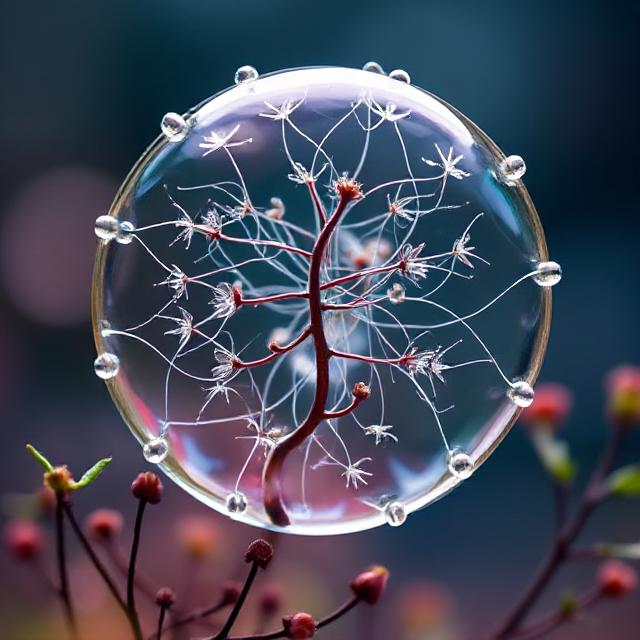
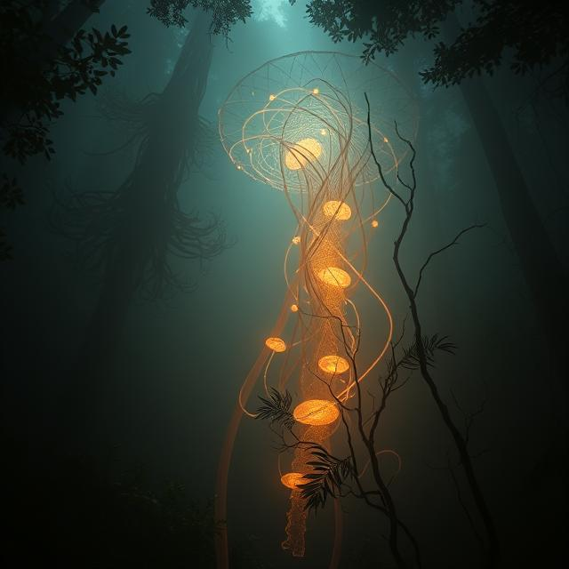

Živé soustavy, jako jsou buňky rostlin, živočichů, hub a bakterií, představují složité systémy, jejichž fungování je neoddělitelně spjato s chemickými procesy. Tyto procesy jsou založeny na chemických prvcích a sloučeninách, které tvoří struktury organismů a umožňují jejich metabolismus.

Chemické základy života zahrnují biogenní prvky, které dělíme na dvě skupiny.
-
Makrobiogenní prvky
Makrobiogenní prvky tvoří až 99 % hmotnosti živé hmoty a mezi nejdůležitější patří:
- uhlík: základ organických sloučenin, umožňuje tvorbu dlouhých řetězců,
- vodík a kyslík: součást vody a organických látek, klíčové pro energetický metabolismus,
- dusík: základ aminokyselin a nukleových kyselin,
- fosfor: přítomen v nukleotidech a fosfolipidech, důležitý pro přenos energie (ATP),
- síra: součást některých aminokyselin (např. cystein, methionin).
-
Mikrobiogenní prvky
Mikrobiogenní prvky se vyskytují v měnším množství, mezi významné patří:
- železo: transport kyslíku v hemoglobinu,
- hořčík: součást chlorofylu a některých enzymů,
- zinek,
- měď,
- jod.
Nezastupitelnou složkou živých organismů je voda, která tvoří 60–70 % jejich hmotnosti. Díky své polaritě je voda výborným rozpouštědlem pro ionty a polární molekuly, což umožňuje chemické reakce nezbytné pro metabolismus. Její vysoká tepelná kapacita stabilizuje teplotu organismů, zatímco koheze a kapilarita zajišťují transport látek, například v cévních svazcích rostlin.
Kromě biogenních prvků a vody jsou klíčovými složkami živých organismů organické molekuly (makromolekuly), jako jsou:
- Sacharidy: fungují jako zdroj energie (například glukóza), zásobní látky (škrob u rostlin, glykogen u
živočichů) a stavební materiály (celulóza v rostlinách, chitin uhub a hmyzu).
- Monosacharidy: jednoduché sacharidy, tj. cukry (např. glukóza).
- Disacharidy: složené ze dvou monosacharidů (např. sacharóza).
- Oligosacharidy* a polysacharidy: složené z několika monosacharidů (např. mateřské mléko, škrob).
- Lipidy (tuky a oleje): jsou zásobní látky, tvoří biomembrány a působí jako izolace.
- Fosfolipidy: stavební jednotky membrán.
- Steroidy: regulace hormonů (např. cholesterol).
- Proteiny (bílkoviny): skládají se z aminokyselin a plní různé funkce, například:
- katalýza reakcí (enzymy),
- transport (hemoglobin),
- tvorba struktur (kolagen).
- Nukleové kyseliny: zajišťují uchování, přenos a využití genetické informace v buňce.
- DNA (deoxyribonukleová kyselina) nese genetickou informaci, uchovává ji v jádře buňky.
- RNA (ribonukleová kyselina) přenáší genetickou informaci z DNA do ribozomů, kde se podle ní tvoří bílkoviny (proteiny).
Anorganické sloučeniny a ionty, jako jsou Na⁺, K⁺, Ca²⁺ nebo Cl⁻, mají v buňkách rovněž významnou roli. Přispívají k přenosu nervových vzruchů, regulaci osmotického tlaku nebo svalové činnosti.
- Vápník a fosfor dodávají pevnost kostem a zubům.
- Hořčík a zinek se podílejí na enzymových procesech.
Živé soustavy se liší od neživých tím, že vykazují určité základní vlastnosti. Tyto vlastnosti společně tvoří složitý systém, ve kterém jednotlivé procesy spolupracují na zachování života.
-
Strukturovanost a hierarchie
Živé soustavy jsou organizovány na různých úrovních:
- Buňka: základní stavební jednotka života.
- Tkáň, orgán, organismus: buňky se spojují do tkání, tkáně tvoří orgány a orgány spolupracují v celém organismu.
- Ekosystém: jednotlivé organismy vytvářejí větší systémy, jako jsou společenstva a ekosystémy.
-
Metabolismus
Metabolismus zahrnuje všechny chemické reakce probíhající v organismu.
Tyto procesy jsou rozděleny na
- Katabolismus: rozklad látek spojený s uvolněním energie (např. trávení potravy, dýchání).
- Anabolismus: syntéza složitějších molekul za spotřeby energie (např. tvorba bílkovin, fotosyntéza).
Energetické přeměny jsou klíčové pro růst, pohyb i reprodukci.
-
Reprodukce
Všechny živé soustavy jsou schopny reprodukce, což je proces tvorby nových jedinců.
- Pohlavní reprodukce: kombinuje genetickou informaci dvou jedinců, čímž zajišťuje genetickou variabilitu.
- Nepohlavní reprodukce: dochází k vytvoření kopií (např. dělení buněk).
Autoregulace a homeostáza
Organismy mají schopnost udržovat stabilní vnitřní prostředí (homeostázu), i když se vnější podmínky mění.
Příklady:
- Regulace tělesné teploty (termoregulace).
- Udržování optimální hladiny cukru v krvi.
-
Růst a vývoj
Růst znamená zvětšování velikosti organismu nebo jeho částí, zatímco vývoj zahrnuje změny struktury a funkce během života.
Příklad:
- Semínko se vyvine v dospělou rostlinu schopnou rozmnožování.
-
Dráždivost a reakce na podněty
Živé soustavy reagují na změny prostředí.
- Rostliny se otáčejí za světlem (fototropismus).
- Živočichové reagují na zvuk, světlo nebo teplotu.
-
Adaptace
Adaptace umožňují organismům přežít v měnícím se prostředí.
Příklady:
- Tlusté listy sukulentů pro ukládání vody v suchém prostředí.
- Srst ledního medvěda pro izolaci v chladných oblastech.
-
Propojenost a systémovost
Všechny vlastnosti živých soustav spolu úzce souvisejí a vytvářejí systém. Například:
- Metabolismus závisí na příjmu živin a autoregulaci.
- Růst a reprodukce závisí na energii získané metabolismem.

*Krevní skupiny se liší právě podle typu oligosacharidu, který je součástí antigenů na povrchu červených krvinek.
Podrobnosti najdete zde:
Člověk